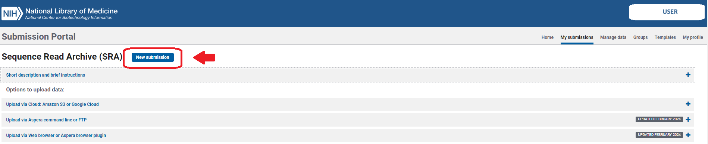
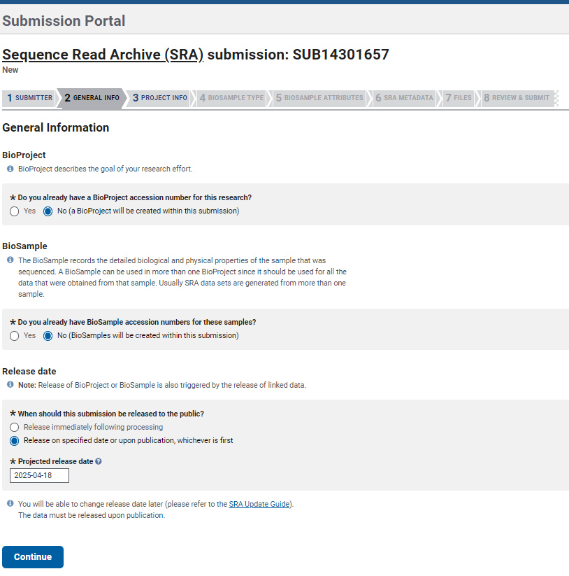

SRA data submission
The NCBI’s Sequence Read Archive (SRA) is an open access repository for high throughput sequencing data (e.g., Illumina sequencing data). In this section we will provide a general overview/summary of the process and important considerations when submitting data to public repositories. Use the link resources provided for further information.
1 Important information before starting
SRA only accepts minimally-processed read data (raw data) in specific formats. SRA accepts binary files such as BAM, SFF, and HDF5 formats and text formats such as FASTQ. SRA does NOT accept assembled contigs.
Check the number of samples and the size of your files. You can submit <100 samples and files less than 100GB (including compressed gzip or bzip2, files ) in a SINGLE submission. If more than 100 samples, you must create multiple submissions with the same
BioProjectreference. Remember keeping each set of uploads under 5TB.You can NOT update an existing record or resubmit the data files. For that you must contact the SRA helpdesk (sra@ncbi.nlm.nih.gov) for assistance.
2 Start the submission
2.1 Create an account in NCBI
To start you have to create an account at https://account.ncbi.nlm.nih.gov/signup/. You can choose any of the options available:
Make sure to link your account to an email you will have access to in the future. You can use your OSU email but make sure you add an additional/alternative email contact for your submissions.
2.2 Submission Process
- Once you have an account, use the following link to
Log inthe SRA Submission Portal https://submit.ncbi.nlm.nih.gov/subs/sra/
- Click on the
New submissionbutton.

Here you will follow several steps (tabs) in the upper gray bar:
- Notice that SRA assigned a temporary submission ID in the form of
SUB####. This is a unique number that will help you track the status of your submission and request help to SRA staff. Continue adding your information on theSubmittersection and clickContinue.
You may leave your submission at any step and return to finish it later. However, if you upload files and do not submit them, they will be automatically deleted 30 days after folder creation.
- Continue with the section
General Info. Here you need to provide information in case you already have a BioProject and BioSample numbers. If not, just select NO in both options and you will be able to create both later during the submission process. IMPORTANT: You need to set a release date, it is recommended to select a date of at least a year after submission so you can make modifications if needed and before any manuscript submission.

BioProject describes the goal of the sequencing study, thus you may accumulate data that are suitable for submission in multiple NCBI databases and all can be linked to the same BioProject. BioProject accession ID will appear in the form PRJNA##.
BioSample is a record of a biological isolate with unique physical properties that had been sequenced. BioSample accession IDs will be SAM##.
Examples from NCBI https://www.ncbi.nlm.nih.gov/sra/docs/submitbio/:
- 23,000 unique 16S amplicons from a single seawater collection point = 1 BioSample
- CHO cells infected with a virus and sampled at 0, 2, 4, and 8 hours post infection = 4 BioSamples (because 4 different time points)

- In the section
Project Infoprovide the Title and Description of the project/study from which your samples come from. You can add additional information about your project
such as Grants and link it to external information inExternal links.
- In the section
BioSample Typeyou can choose from different packages based on your data/study. These packages include attributes defined by the Genome Standards Consortium (GSC) to formally describe and standardize sample metadata.
- Continue with the section
BioSample Attributes. Here you can download a BioSamples Submission Template based on the package previously chosen. Fill the information mandatory and add more columns for additional fields you want to include (see ‘More about Metadata’ box below).
For example: I chose the Package MIMARKS: survey, agriculture; version 6.0 and downloaded the template seen below. Complete the template and upload it or use the built-in table editor option. IMPORTANT: to avoid errors, you must INCLUDE a column with unique sample identifiers (see red square in the example below) different to the sample names.
Include as much metadata as possible for your sample. This will help when comparisons among datasets and future analysis with your data might be required.
Dundore-Arias et al. 20201 discuss on the importance of agriculture-specific metadata standards for microbiome research. They proposed a list of “required” and “desirable” metadata categories and ontologies essential to be included for describing agricultural microbiome studies.
You can include as many additional fields (columns) as you see necessary on your BioSample Submission Template. For instance, soil physical properties, sample collection methods, sample processing.
- In the section
SRA Metadatayou need to add the information related to your sample files. Similarly to BioSample information, you can download the metadata template, fill in the information and upload it again OR add the metadata using thebuilt-in table editoroption.
Make sure you add the filenames for Forward (R1) and Reverse (R2) reads including format extension, and describe the sequencing process including library strategy, layout, platform, etc.
Finally, upload your files in the section
FilesThe
Web browseroption is the easiest way to do it since it let you drag files from your computer, however the process could be very slow if you have several files.Note that your uploaded file names should match to the file names listed on the
Metadatatab, including the file extension.
This is a faster way of uploading several files directly from command line to NCBI’s SRA. From the OSC (Ohio Supercomputer Center), follow these steps:
Open the terminal and locate your data within OSC using the command
cd‘your/directory/path/here’.Start a FTP connection by entering
ftp ftp-private.ncbi.nlm.nih.gov.After connecting, use the username and password provided by the NCBI SRA submission portal (it will appear when you select the
FTP upload instructions).Before attempting to move your files into your account you will need to create a new directory and access it by using the following commands:
mkdir 'YourNewDirectory' cd 'YourNewDirectory'Now copy the files in your current OSC directory to your newly created NCBI SRA directory using the command
mput *Verify that the files have been successfully copied by clicking on the select
preload folderoption in the file submission page
- Please review your submission’s summary and make sure that all information is correct including the release date. At this stage, you can return to any step of your submission by clicking on the corresponding tabs.
You can check your submissions on My Submissions tab in SRA Submission Portal’s home page https://submit.ncbi.nlm.nih.gov/subs/. Your submission’s Overview page can be found by clicking on the link SUB# in the column Submission.
Attribution
This material was modified after NCBI and SRA guides:
- What You Should Expect
- Making Submission in SRA Submission Portal
- Submit your project and biological samples
- BioSample Packages
- Troubleshooting SRA submission in the SRA Submission Portal Wizard
Footnotes
Dundore-Arias et al. 2020. “Community-Driven Metadata Standards for Agricultural Microbiome Research”. https://apsjournals.apsnet.org/doi/10.1094/PBIOMES-09-19-0051-P↩︎